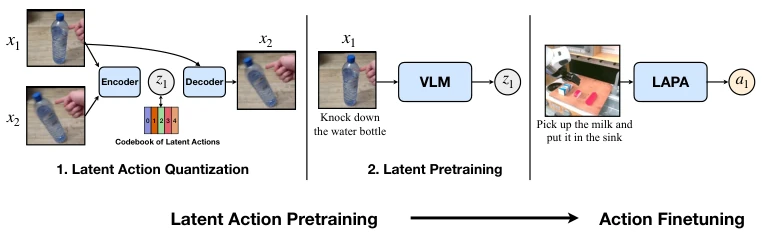
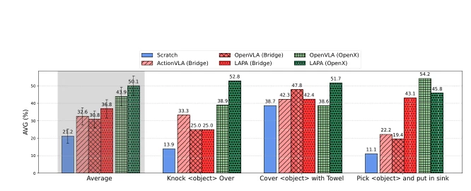
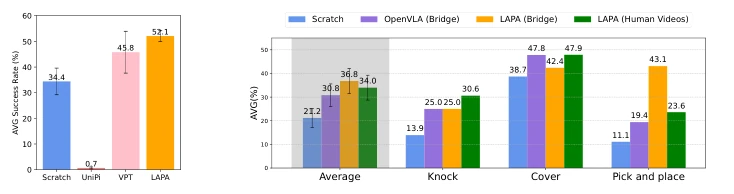
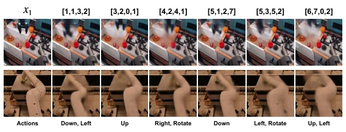
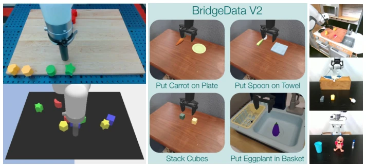
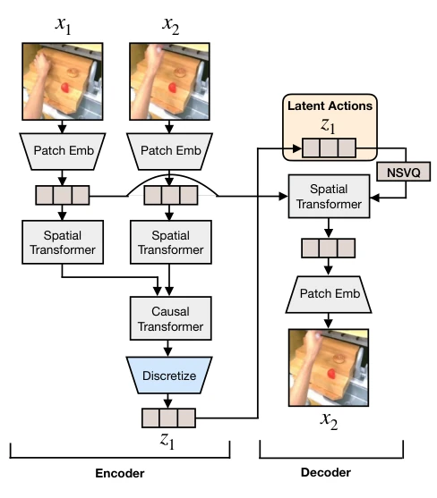
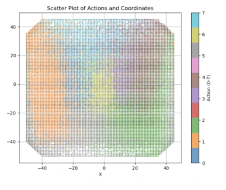
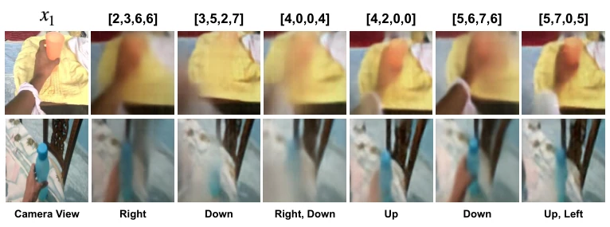

This paper opens a "backdoor" for VLA pretraining: training without robot action labels is possible. The core of LAPA is "substitution", first quantizing changes between video frames into discrete tokens, then letting VLM guess these tokens, finally fine-tuning to map back to real actions. Although authors claim "unsupervised", the fine-tuning stage still relies on a small amount of real action data, counting as "semi-unsupervised". Efficiency improvement of 30x is indeed appealing, considering pretraining OPENVLA requires 21500 A100-hours, LAPA only needs hundreds of H100-hours. Additionally, the model can serve as a world model for closed-loop rollout, achieving neural simulation. However, on fine-grained grasping tasks, LAPA still loses to real action pretraining, indicating this coarse-grained latent action lacks in physical interaction details. Overall, this is another attempt to turn internet video into robot training data; although it has not completely eliminated dependency on real data, it indeed lowers the threshold and provides a new path for large-scale pretraining.
研究动机Motivation
现有的 Vision-Language-Action (VLA) 模型主要依赖人类遥操作收集的动作标签 (Brohan et al., 2023; Kim et al., 2024)，这导致数据规模受限且收集成本高昂，难以扩展到互联网规模。互联网视频虽然丰富，但缺乏显式动作标签，且数据分布与机器人实体存在巨大差异 (McCarthy et al., 2024)。现有方法如 Video Pretraining (VPT) (Baker et al., 2022) 试图通过逆动力学模型提取伪标签，但在跨环境迁移上表现不佳，且 IDM 对环境偏移不鲁棒。此外，基于扩散模型的方法 (UNIPI) (Du et al., 2023) 在长视界任务上规划能力有限，且依赖扩散生成。因此，亟需一种能直接从无标签视频学习通用动作表示的方法，以突破数据瓶颈并提升跨实体泛化能力，利用 Web 规模数据构建机器人基础模型。
Existing Vision-Language-Action (VLA) models mainly rely on action labels collected via human teleoperation (Brohan et al., 2023; Kim et al., 2024), leading to limited data scale and high collection costs, making it difficult to scale to internet scale. Although internet videos are abundant, they lack explicit action labels, and the data distribution has huge differences with robot entities (McCarthy et al., 2024). Existing methods like Video Pretraining (VPT) (Baker et al., 2022) attempt to extract pseudo-labels via inverse dynamics models, but perform poorly in cross-environment transfer, and IDM is not robust to environmental shifts. Additionally, diffusion-based methods (UNIPI) (Du et al., 2023) have limited planning capabilities on long-horizon tasks and rely on diffusion generation. Therefore, there is an urgent need for a method that can learn general action representations directly from unlabeled videos, to break through data bottlenecks and improve cross-entity generalization, building robot foundation models using Web-scale data.

Figure 2: Overview of Latent Action Pretraining. (1) Latent Action Quantization: We first learn discrete latent actions in a fully unsupervised manner using the VQ-VAE objective (Detail in Figure 8). (2) Latent Pretraining: The VLM is trained to predict latent actions, essentially performing behavior cloning. After pretraining, we finetune LAPA on a small set of action-labeled trajectories to map the latent space to the end effector delta action space.
LAPA consists of three stages. First is latent action quantization, using VQ-VAE objective to train encoder-decoder architecture, learns discrete latent action tokens from continuous video frames, similar to BPE in language models, without predefined action priors. Encoder contains spatiotemporal Transformer, decoder only contains spatial Transformer, and uses NSVQ to avoid gradient collapse. Second is latent pretraining, freezing visual encoder, using VLM to predict latent actions, essentially performing behavior cloning in latent space, not relying on real action labels. Finally is action fine-tuning, training on a small amount of labeled trajectories, mapping latent actions to real robot delta actions, replacing the original latent action head. Innovations lie in: 1. Using NSVQ and stop gradient to prevent representation collapse; 2. Latent action space is shared across entities, solving the problem of inconsistent action spaces among different robots; 3. Pretraining stage completely does not need action labels, only relying on video and language instructions, achieving positive transfer from human video to robot actions.

Figure 3: Real-world Tabletop Manipulation Results. We evaluate on a total of 54 rollouts for each model encompassing unseen object combinations, unseen objects and unseen instructions. Average success rate (%) ± StdErr are shown (detailed results provided in Appendix G.3).
Evaluated on Language Table, SIMPLER, and real Franka desktop manipulation tasks. Pretraining data includes Bridgev2, Open-X, and Something-Something V2. Baselines include SCRATCH, UNIPI, VPT, and OPENVLA. Results show LAPA is significantly better than UNIPI and VPT on unlabeled pretraining. In real tasks, LAPA (Open-X) surpasses OPENVLA on multiple metrics, especially in generalization to unseen objects and instructions, with average success rate improvement of 6.22%. Surprisingly, LAPA pre-trained only on human video can also achieve positive transfer on real robots, outperforming OPENVLA (Bridge). Ablation studies show model, data, and latent action size all follow scaling laws, and latent actions can capture center actions in environment such as camera movement.

Figure 4: Pretraining from Human Video Results. Average success rate (%) ± StdErr of LAPA and baselines pretrained on human manipulation videos where the embodiment and environment gap is extreme. We evaluate on both simulation (left) and real-world robot setup (right).

Figure 6: Latent Action Analysis. We condition the current observation x1 and quantized latent action to the decoder of the latent action quantization model. We observe that each latent action can be mapped into a semantic action. For example, latent action [1,1,3,2] corresponds to going down and left while [3,2,0,1] corresponds to going up a little bit.

Figure 9: Experimental Setups. (a) shows an example from the 440k real-world trajectories (top) and the 181k simulation trajectories (bottom) from the Language Table Benchmark. (b) shows the 4 different evaluation tasks we use with the SIMPLER environment. (c) shows the three different tasks that we perform in the real-world.
其他图片Other Figures

Figure 8: Model architecture of our Latent Action Quantization Model.
Figure 12: Latent Action Analysis in Language Table. We condition the current observation x1 and quantized latent action to the decoder of the latent action quantization model. We observe that each latent action can be mapped into a semantic action. For example, latent action 0 corresponds to moving a bit left and forward and corresponds to moving a bit left and back.

Figure 13: Correlation of latent action with ground-truth actions When we map latent actions to ground- truth 2 DOF actions of Language Table, we observe that latent actions are well-clustered in the actual 2D action space.

Figure 14: Latent Action Analysis in Human Manipulation Videos. We condition the current observation x1 and quantized latent action to the decoder of the latent action quantization model. We observe that each latent action can be mapped into a semantic action including camera movements. For example, latent action [3,5,2,7] corresponds to moving the camera a bit down while [4,2,0,0] corresponds to moving the camera slightly up.